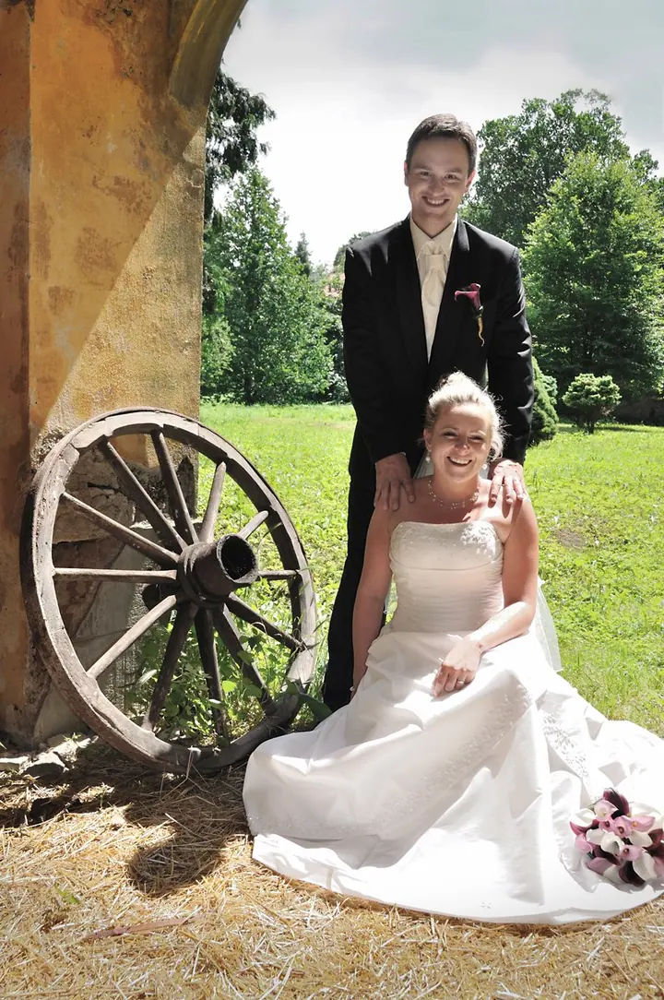
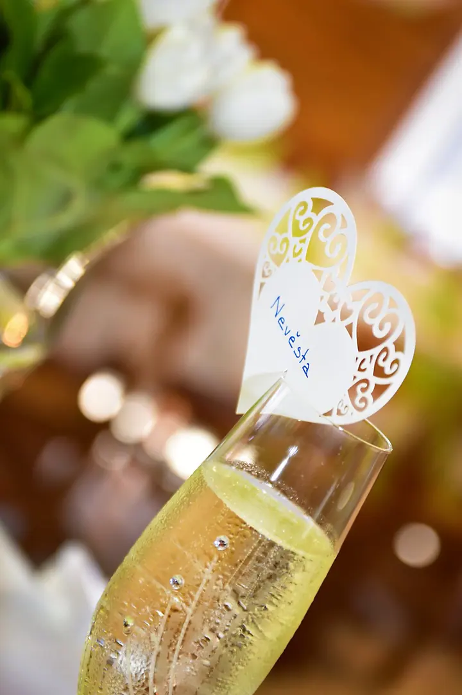
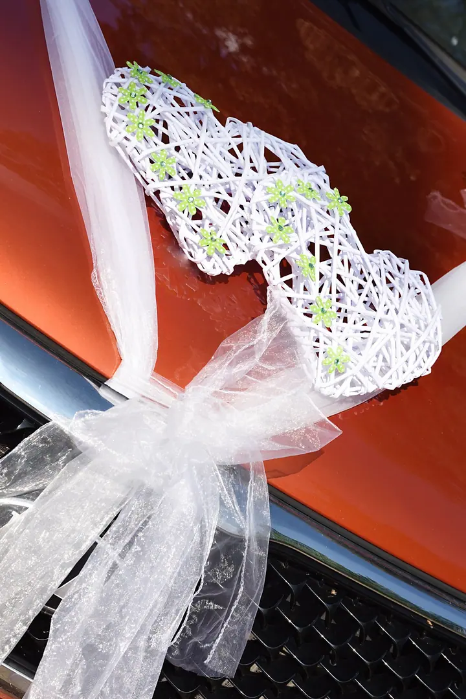

Svatební fotografie
Váš svatební příběh zachytím od ranních příprav nevěsty i ženicha až po podvečerní tanec. Vybrat si můžete z balíčků START, MEDIUM a MAXI, nebo vám sestavím individuální nabídku.





Jmenuji se David Khain a fotím svatby, páry, rodiny i zvířecí mazlíčky v Pardubicích a okolí. S fotografií jsem začínal v roce 1987 u černobílých snímků z fotokomory. Dnes vás provedu celým svatebním dnem, od ranních příprav až po podvečerní tanec.
Více o mně
„Říká se, že život je jen iluze.“
— David Khain
Váš svatební příběh zachytím od ranních příprav nevěsty i ženicha až po podvečerní tanec. Vybrat si můžete z balíčků START, MEDIUM a MAXI, nebo vám sestavím individuální nabídku.
Vyfotím vás na vašich oblíbených místech, v zákoutích města, na historických místech nebo v přírodě. Zachytíme romantické okamžiky příběhu vaší lásky.
Nafotím vaši rodinu v přirozeném prostředí domova nebo tam, kam se rádi vracíte. Čas letí a než děti vyletí z hnízda, je to ta nejlepší příležitost.
Zvířecí mazlíčci jsou plnohodnotní členové rodiny. Zvěčním vás spolu s vaším zvířecím kamarádem a vaším společným přátelstvím.
Fotografii se intenzivně věnuji od roku 1987. Začínal jsem u výtvarné černobílé fotografie, kterou jsem vyráběl klasickým procesem ve fotokomoře, a se svými snímky jsem se zúčastnil mnoha výstav doma i v zahraničí.
Dnes se věnuji hlavně svatební, rodinné a reklamní fotografii. V reklamě dlouhodobě spolupracuji s Estrelou, českým výrobcem bižuterie. Cit pro detail z produktové fotografie se mi hodí i na svatbách, u prstýnků, kytice nebo ozdob na autech.
Mým obvyklým rajonem jsou Pardubice a okolí, ale rád za vámi přijedu i do jiných krajů. Říká se, že život je jen iluze. Pojďme z něj společně zvěčnit to výjimečné, ať máte fotky, ke kterým se budete rádi vracet.
Napište mi přes poptávkový formulář nebo zavolejte. Stačí typ focení, termín a pár slov o tom, co si představujete.
Společně vybereme balíček podle toho, jakou část dne chcete mít nafocenou. Když vám žádný nesedí, sestavím nabídku na míru.
Na svatbě vás doprovodím od příprav nebo obřadu až po tanec, podle zvoleného balíčku. Rodiny, páry a mazlíčky fotím na místech, která máte rádi.
Dostanete upravené fotografie. K balíčku MAXI patří fotokniha a webová prezentace, ke všem ostatním si fotoknihu nebo fotoobraz můžete doobjednat.
Balíček START (80 až 100 fotografií) stojí 5 600 Kč, MEDIUM (130 až 150 fotografií) 7 500 Kč a MAXI (180 až 230 fotografií) 9 800 Kč. Můžeme se ale domluvit i na individuální nabídce.
Ranní přípravy nevěsty a ženicha, zdobení aut, obřad, focení novomanželů, oběd, odpolední veselí, krájení dortu i první tanec. V ceně je bezešvá fotokniha s 26 stranami a originální webová prezentace.
Ano. Do 15 km od Pardubic je cestovné v ceně, za delší cestu účtuji 5 Kč/km (tam i zpět celkem).
Rodinné focení (20 fotografií, zhruba hodina) stojí 3 000 Kč, fotorande (20 fotografií) 3 500 Kč a focení mazlíčků (30 fotografií, 1 až 2 hodiny) 3 800 Kč.